← 返回阅读库 · 原论文目录
论文讲解阅读文档 · 新模型 · v058
EfficientNet V1V2[1905.119462104.00298]
视频时长 00:13:27；讲解文字 5,588 字符；提取讲解画面 22 张。按视频原顺序阅读，每段文字保留时间戳。
文字来自整段视频的自动语音转写，按自然停顿分段，并与 PPT / 论文页面 / 演示画面对齐。未将讲解压缩为摘要；术语、数字和口述公式请结合画面及原论文核对。 阅读稿已校正规范部分明确术语误识别；原始逐字稿和每处修改记录另行保留。
讲解画面为源视频截图（640×360），不是可编辑 PPT 文件。全片按每秒 2 帧扫描内容变化，逐步展开页保留；连续动画保留代表画面。清晰度受源视频限制。
下载完整资料包 · 含离线 HTML、PDF、Word、全部 PPT 画面和字幕。
原论文与材料
EfficientNet: Rethinking Model Scaling for Convolutional Neural Networks · 下载完整 PDF（11 页）
EfficientNetV2: Smaller Models and Faster Training · 下载完整 PDF（11 页）
按时间阅读
00:00:00–00:00:40 · 画面 001
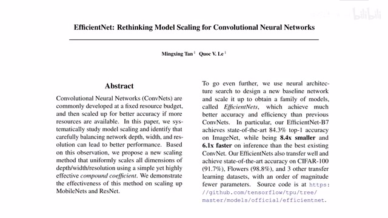
00:00:00–00:00:40 · 画面 001大家好,今天我们来介绍 EfficientNet 这个系列的网络是继承自我们之前介绍的 MobileNet 和 MNASNet，都是通过搜索来压缩模型的规模,提高模型的性能。那么在这篇论文中,作者更加详细地讨论了如何放缩我们的模型适合我们不同的计算量的要求。那么在今年的 4 月 1 号,作者又发布了 EfficientNet V2。
那么今天的这个视频里呢，我们会把两个版本的 EfficientNet 都介绍一下。那么首先来看第一个版本 EfficientNet Rethinking Model Scaling for Convolutional Neural Networks。那么说到这个 Model Scaling，我们肯定想到就是一个模型嘛，你把它放得越大，那肯定就是越大越好嘛，对吧？那么具体怎么样算大呢？这里呢，作者讨论了我们通过增加 Channel 的数量让我们的网络变得更宽，我们通过增加层数让我们网络变得更深。
00:00:40–00:01:02 · 画面 002
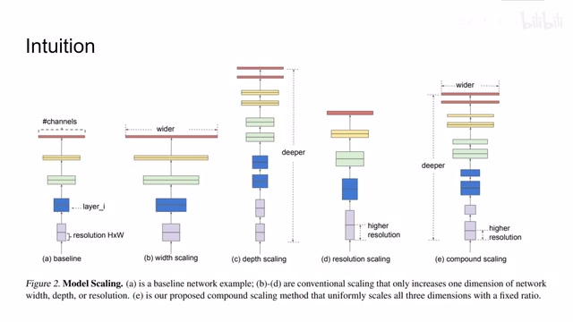
00:00:40–00:01:02 · 画面 002那么最后我们可以通过增加我们输入图像的分辨率来让我们的网络有更高的分辨率。这话说的跟没说一样。那么实际在应用中我们应该选择哪一种合适呢？小孩子才做选择，成年人都是我都要。所以这里有一个 compound scaling，也就是说我们这里要把各种网络放缩的技巧结合起来。那么一般来说我们都知道，随着网络规模的增大，网络的性能就会变好，越大越好嘛。
00:01:02–00:01:03 · 画面 003
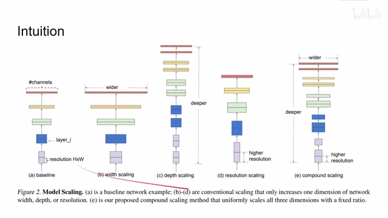
00:01:02–00:01:03 · 画面 00300:01:03–00:01:17 · 画面 004
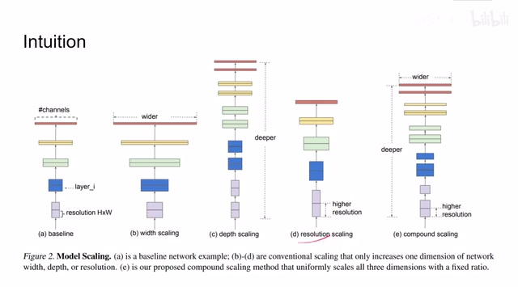
00:01:03–00:01:17 · 画面 00400:01:17–00:01:20 · 画面 005
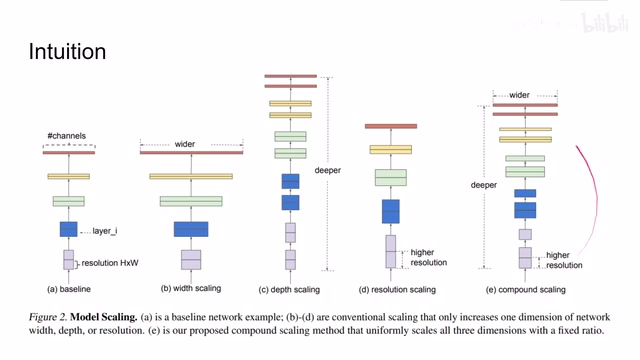
00:01:17–00:01:20 · 画面 00500:01:20–00:01:57 · 画面 006
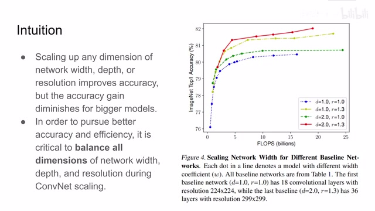
00:01:20–00:01:57 · 画面 006但是当你的模型达到一定限度之后，你获得的收益就非常有限了。同时这边的一个实验向我们证明，如果单纯的只是缩放它的宽度、深度还有 resolution，那么它能够带来的性能的提升是非常有限的。因此我们在缩放我们的模型的时候需要综合考虑这三个尺度的缩放。所以你看到前面的 compound scaling 它可不是胡乱的就组合起来的，它是有备而来。
那么下面我们就看作者为了这个缩放做了哪些准备吧。这里呢，作者使用α,β,γ三个参数呢来控制这个深度宽度还有 resolution 它们缩放时候的数量级。使用这个φ呢来统一的管理这三个尺度的缩放程度。这里呢，你可以看到作者对α,β,γ它的值呢有了一个约束。这样子的约束呢能够保证我们的计算量呢能够每次以 2 的φ这样的一个尺度呢去增长。
00:01:57–00:03:09 · 画面 007
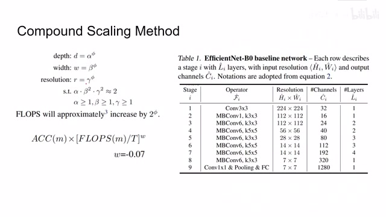
00:01:57–00:03:09 · 画面 007那么当然呢，和我们之前提到的这个 efficient net 一样，作者呢是使用了相似的尺度来去评估我们搜到一个模型的好坏。唯一的区别呢就是这里用了 flops 替代了原来的 latency，因为这次不是在实际的设备上做了，而是估计一个大概的计算量。而像这个 w 值呢，回归到了这个之前的负能连连期。那么在我们正式开始缩放之前呢，首先作者利用这个更新过的尺度，再使用 MNASNet 的方法呢，帮我们搜出了一个 EfficientNetB0。它呢就作为我们的 baseline，以后我们所有的 EfficientNet 呢都会在这个模型的基础上呢进行缩放。那么它的结构呢，长这个样子。那么下面呢我们就来看作者怎么样搜索这个缩放之后的模型。那么这里呢，你可以看到它的搜索的逻辑呢是这样的，首先呢我们会固定这个 Fy 得为 1。
00:03:09–00:04:14 · 画面 008
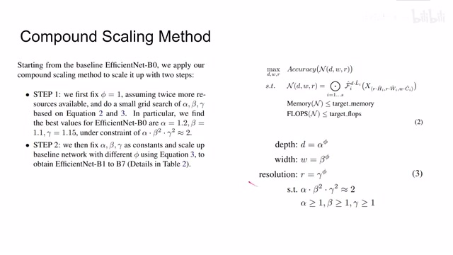
00:03:09–00:04:14 · 画面 008然后呢，在这个 efficient b0 这个 b3 的基础上找到一个最合适的αβ和γ。这个值呢，只供你参考就可以了，实际定义模型的时候呢，跟它还不太一样。在有了这样一个最优的αβ和γ之后呢，然后呢通过调节不同的φ的值就可以直接缩放出从 b1 到 b7 这样不同尺寸的模型了。说到这里呢，之前有好奇的朋友问，你这个αβ还有γ它都是小数。
你说 resolution 嘛，你乘一个小数那没问题，那做一个缩放还可以理解。你说这个 channel 和 depth 你乘 1.2 倍那到底哪些层缩放哪些层不缩放呢？但是其实呢做的实现非常简单，你如果看它的代码呢，你会发现它是直接向下取余，把这些数呢获得它的 facts me 之后呢，直接向下取余。所以有些东西呢，你确实要结合它的代码才能看出一些端倪。那么下面呢我们就来看看这些模型它的具体的表现吧。
00:04:14–00:04:59 · 画面 009
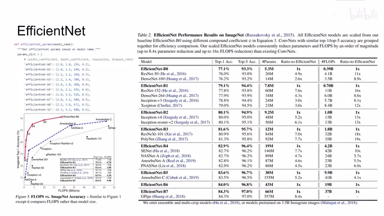
00:04:14–00:04:59 · 画面 009这里可以看到呢，是从作者代码中找到的这个 B0 到 B7 甚至 B8 还有这个 L2 这些不同模型它的参数，包括控制 width 的这个 BetaDepth 的 AlphaResolution 的 Gamma，还有一个呢是 Drop Rate。为什么这里的 Drop Rate 也作为一个因素需要被考量呢？这里呢，在我们第二篇论文 EfficientNetV2 里面，很快呢就会得到揭晓。
那么从下面的这个图包括右边的表格，你可以看到本文的方法相对于其他方法的巨大优势。这个就是做网络结构搜索它的意义，它主要就体现在相近的性能下它的参数量和计算量的巨大优势。最后这里还有两个可视化，这里作者告诉我们，随着我们使用 compound scaling 使用 compound scaling，我们的模型注意到的区域和我们的物体更加相关。
00:04:59–00:05:23 · 画面 010
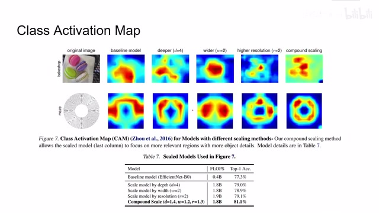
00:04:59–00:05:23 · 画面 010那么以上就是 EfficientNet V1 它的主要内容了。总的来说，它的思路并不复杂，但是里面有大把的工程经验在里面。那么随后我们就来到 EfficientNet V2，今年 4 月 1 号才出了一篇论文，它的代码也没有公开。那么这篇论文的重点在于我们 train 的过程。那么相对于之前的第一个版本，本文主要包含了以下四点的改进。那么我们先从相对简单的两点说起。
00:05:23–00:05:34 · 画面 011
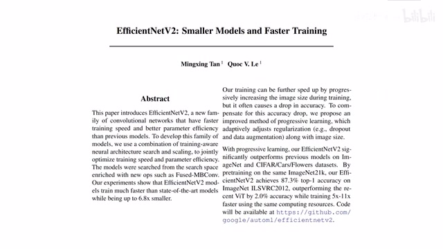
00:05:23–00:05:34 · 画面 01100:05:34–00:07:19 · 画面 012
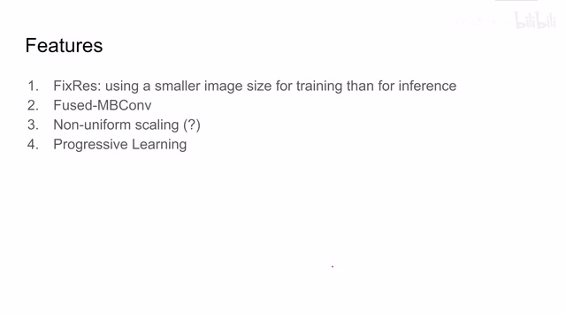
00:05:34–00:07:19 · 画面 012首先第一个是这个 FixRes，那么他的思想是来源于另一篇论文，就是我在训练的时候我使用一个相对较小的图像去训练，这样子能让我们的 Batch Size 很大，然后训练速度也很快。那么实际测试的时候我拿原始主动的图像来进行测试。那么在 FixRes 这篇论文里面，他在这个 train 完之后还做了 fine-tune，那么本文中就没有做 fine-tune。那么作者表示通过这样的方法可以改善我们的训练速度。
而且呢能够轻微的提升我们模型的性能。那么这个呢是第一个小的改进。然后呢我们再看这个小的改进是呢 uniform scaling，这个改进的意图呢它是很直接的，它的意思呢就是说我不同层次的网络我进行缩放，它产生的计算代价是不一样的。那比如说你在最底层的网络它要处理的面积 resolution 就要大一些。所以你加倍它会可能指数倍的增加整个网络的计算量，而对于相对高层的网络它的影响就没有这么明显。因此这里作者说我们缩放的时候是逐渐增加后面的一些网络层数，就是更高层次的网络层数的，但是具体怎么实现的这里论文也没有讲清楚，作者的代码还没有公开，所以我们现在也不知道它的实验细节。从它的描述来看，估计就是原来直接缩放的时候可能把显存爆掉。
那么后来呢，就想着限制一下中间这个最大的 tensor 它的尺寸，那只是一个猜测啊，不一定对。那么讲完这两个呢，我们就来看这个 Fused-MBConv 这一点呢，真的是证明我们的历史的发展啊，是一个螺旋向上的过程。这个呢是 MBConv，那么你如果熟悉 MobileNetV2 呢，那你应该对它非常熟悉了。
00:07:19–00:08:25 · 画面 013
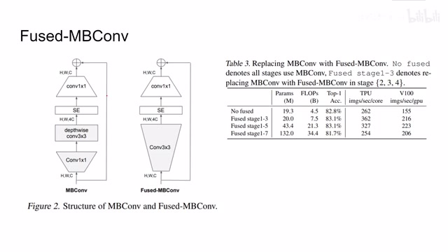
00:07:19–00:08:25 · 画面 013mobile net 的核心呢，就是把一个一般的 generalize 的这个 convolution 给它拆成一个 one by one 的 convolution 加上一个 depthwise convolution。那好嘛，它改变了 convolution，但是呢，在这篇论文中呢，它呢又改了回去，把这两个 convolution 呢又给它捏回到一个 convolution。那希望这不是这个频道最后一期视频啊。这里呢，作者做了一个实验，从一开始呢，我们所有的层都使用这种拆分的这个 bottleneck convolution。
到我们从最低层开始逐渐替换为这个 fused convolution，你可以看到呢在只替换第一到三层的时候呢我们处理的速度还变快了，这真的是跟我们的硬件对于 convolution 的优化呢脱不开关系。那么所以呢作者说干脆那我就把前三层呢替换成这种 fused 也就是原版的这个 convolution，那么这个呢就是 fused MB convolution。那么最后呢我们再来看这个 progressive learning。
00:08:25–00:10:11 · 画面 014
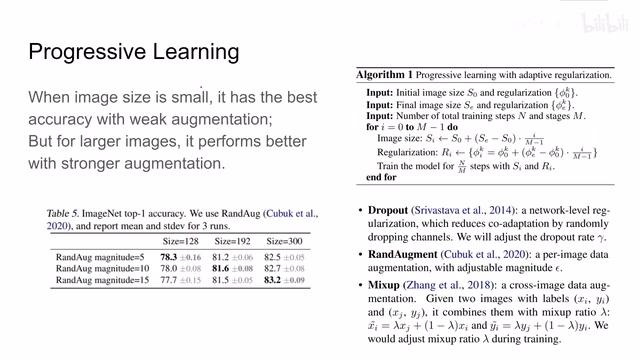
00:08:25–00:10:11 · 画面 014他的思想其实就是适度的图像增强，易脑过度的图像增强伤身，提倡我们健康的进行图像增强，避免步子太大。具体来说就是当我们的图像尺寸很小，当我们的网络结构比较小的时候，我们应该使用相对弱一点的 data augmentation，这样子能给我们好的结果。但当我们使用大的图像的时候，我们的网络结构很强的时候，我们应该使用更强的 data augmentation。
能力越大吃的越复杂。这里作者做了一个简单的实验，左边是不同程度的 augmentation，右边是按照不同的图像尺寸训练的模型。那么你可以看到它就符合我们刚刚观察到的规律。因此结合我们之前提到的 FixRes，这里作者提出了 progressive learning with adaptive regularization。
也就是说呢，我在训练的时候呢，从一开始我让网络学习一个相对较小的图像，然后这个图像呢进行的图像增强呢也很弱，甚至没有。那么随着训练的继续呢，我们的网络已经开始掌握了这些最简单最基本的概念之后呢，我们开始加大难度，加大图像的尺寸，加大我们的 data adaptation 或者叫 regulation 它的力度，这样逐渐增加，最终训练出一个强壮的网络来那么关于这个尺寸和力度的调节呢这里呢使用了最简单的就是线性的插值那么具体呢我们调节了哪些 regularization 的力度呢你可以看到这里呢首先是 dropout 这个呢就回答了为什么我们 EfficientNetV1 里面它要对不同尺寸的网络设置 dropout 然后呢是这个 RandAugment 那么还有一个呢是这个 mixup 它的意思是呢你在图像中呢去叠另一种种类的图像通过调节它的力度呢来混淆这个模型
那么具体来说呢，就是一开始你训练的时候呢，送的都是这种样的样本，那么中间呢可能是这种样子，那最后呢样本已经变成这种样了。那这种样本是怎么来的呢？你可以看到这是两种不同的图像给它叠起来的，真是给大熊猫留点吃的吧。那么最后呢，我们来看到作者通过替换原来的 Separable Convolution 然后呢，重新做这个网络的搜索，得到网络结构，左边呢是我们的 EfficientNet 第一个版本的 EfficientNet
00:10:11–00:10:28 · 画面 015
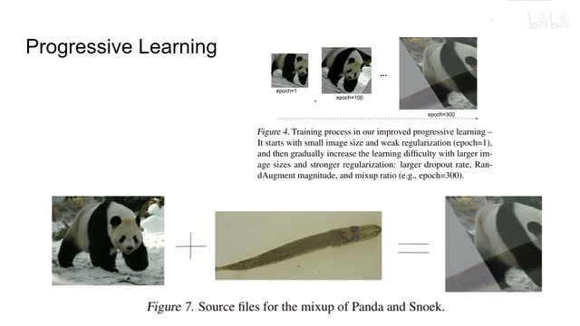
00:10:11–00:10:28 · 画面 01500:10:28–00:10:58 · 画面 016
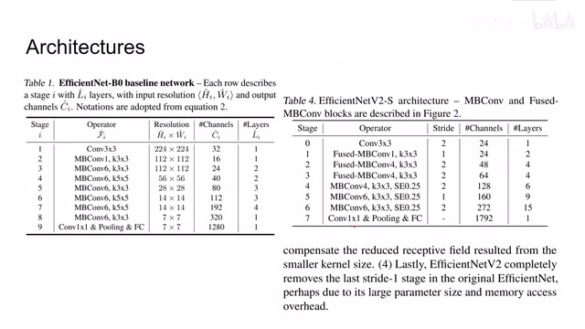
00:10:28–00:10:58 · 画面 016右边是我们的现在的 EfficientNetV2，你可以看到一开始我们前面的几个 stage 替换成了传统的 convolution，后来我们的 kernel 全部变成了 3x3 的。感兴趣的朋友你可以仔细的对比一下这两个网络的结构。那么之后就是做出回报的结果了，这里你可以看到对比了之前一些工作还有包括 transformer-based 一些工作，可以看到本文提出的方法。
00:10:58–00:11:09 · 画面 017
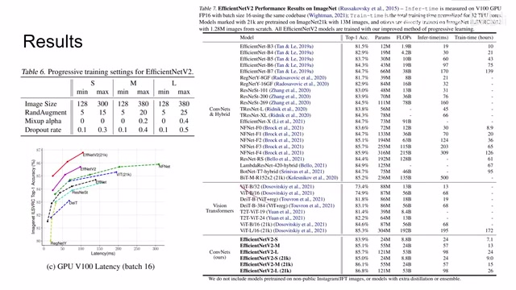
00:10:58–00:11:09 · 画面 017outperform 之前的方法，那么这个图呢包括还还有更多的像这个计算量啊还有还有参数量啊这样的这个对比，你可以看到呢本来的方法是 outperform 之前这些方法的，这里呢作者列出了他们在训练这个网络的时候呢使用这个 progressive learning 的方法，你可以看到呢，对于这种小尺寸的网络我们使用的这个 augmentation 是比较弱的，那像这里的 mixup 呢就没有
00:11:09–00:11:16 · 画面 018
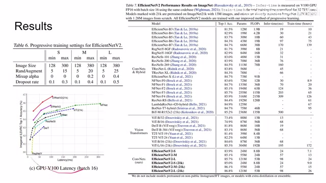
00:11:09–00:11:16 · 画面 01800:11:16–00:11:43 · 画面 019
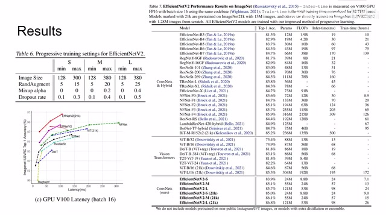
00:11:16–00:11:43 · 画面 019那对于大尺寸的网络呢，我们呢还是逐渐的给它加上了这个 Datamentation，这个呢是跟它之前的描述呢是相符的。那么随后呢，作者还测试了一些 Transfer Learning 的表现，证明本文的网络呢具有一定的泛化性能。但是呢，你可以看到这些数据集呢都是相对比较简单的数据集了。那么最后呢，我们看作者做了一些 Ablation，这里呢作者首先对比了 EfficientNetV2 和 World1，即便使用相同 Progressive Learning 的方法呢
00:11:43–00:11:55 · 画面 020
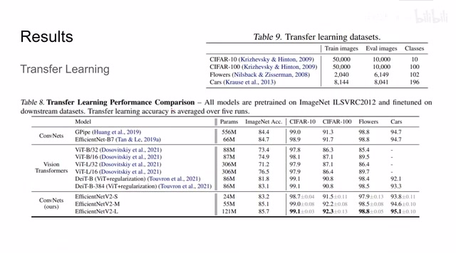
00:11:43–00:11:55 · 画面 02000:11:55–00:13:27 · 画面 021
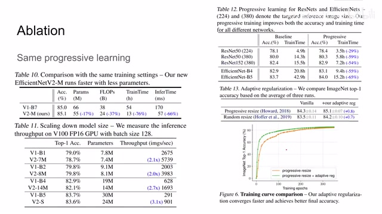
00:11:55–00:13:27 · 画面 021那么本文的方法呢，跟之前的方法相比呢，主要就是大幅减少了训练的时间，同时呢提高了网络的这个速度，让我们的网络变得更清亮。而且即便是缩放这个模型呢，这个观察呢也是成立的。其实呢，本文大部分的创新呢都是在这个 Progressive Learning 这个项目下面的。那么这里呢就是对比了这个 Progressive Learning 它的这个好处了，你可以看到呢，无论是 ResNet 还是上一个版本的 EfficientNet能够减少训练的时间，同时呢略微的提升一点性能，那么这里呢作者还对比了这个 adaptive regularization，就是我们之前说的不同的 data augmentation，然后这个 regularization 的力度呢是随着训练的过程逐渐加强的，那么你可以看到呢，它对我们性能的提升呢是跟我们使用什么样的 resize 的方法是没有关系的，无论是本文的 progressive resize 还是这个 random resize，那么这个 adaptive regularization 呢都能够提升模型的性能
那么包括这个曲线呢也证明了这个事情，那么以上呢就是我对整个 EfficientNet 系列的一个简单的介绍。总的来说呢，还有很多技术实现的细节，包括论文描述不到位的地方呢，我们还需要等待它的代码公开之后再做一一的验证。第二呢，它给我们实际的工程呢提供了一个很好的 backbone。你现在拿来它这个模型，根据你设备实际有的运算量来对这个模型进行缩放那就可以了。那么感谢您的收看，再见。
00:13:27–00:13:27 · 画面 022
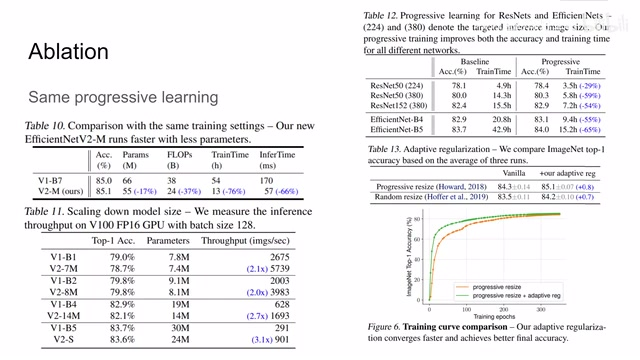
00:13:27–00:13:27 · 画面 022转写与来源说明 · 0 个自动复核提示
保留 29 个原始语音片段，0 个片段触发自动复核提示。提示仅用于定位可能的术语、重复或识别问题，不等于已确认错误。
讲解画面为源视频截图（640×360），不是可编辑 PPT 文件。全片按每秒 2 帧扫描内容变化，逐步展开页保留；连续动画保留代表画面。清晰度受源视频限制。
原视频：paper/合集_2026-10-16_新模型/[论文简析]EfficientNet V1V2[1905.119462104.00298].mp4
SHA-256：f593b022fbb9da4620597f05c7af141beb595a12cfb3711156d2fb7d5ef310b4
全文按视频语音与画面制作。原论文可从上方链接下载；完整资料包保留全文、原始逐字稿、字幕和校对记录。